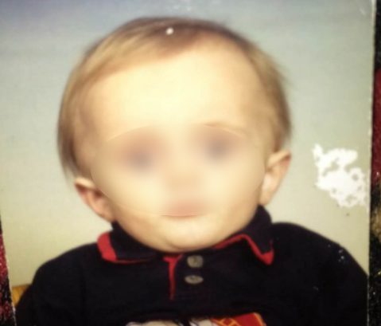
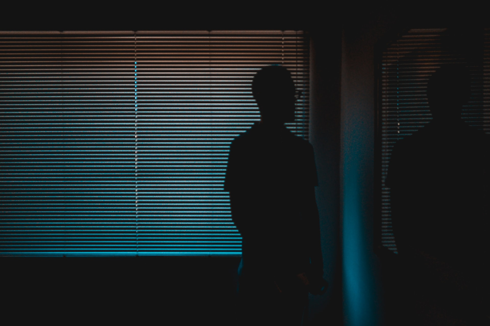
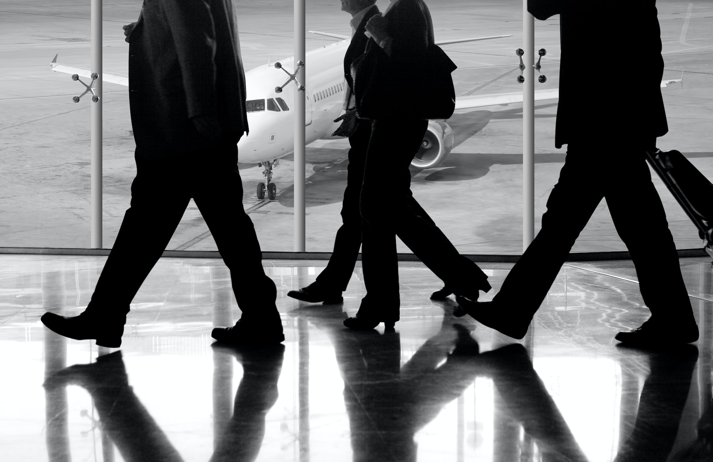
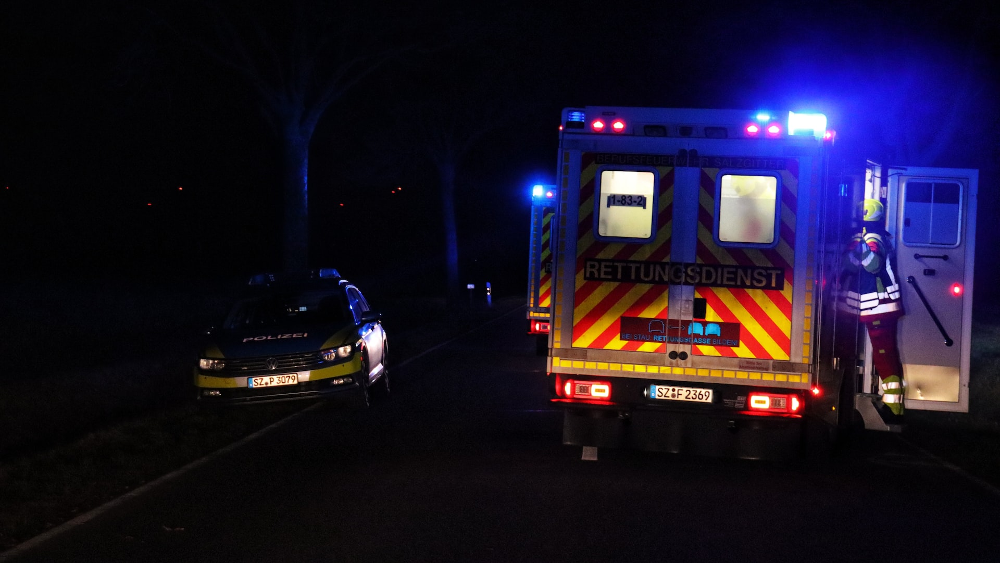
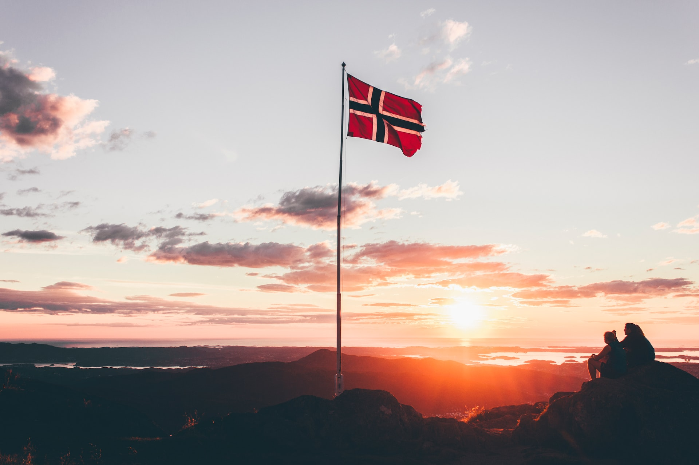
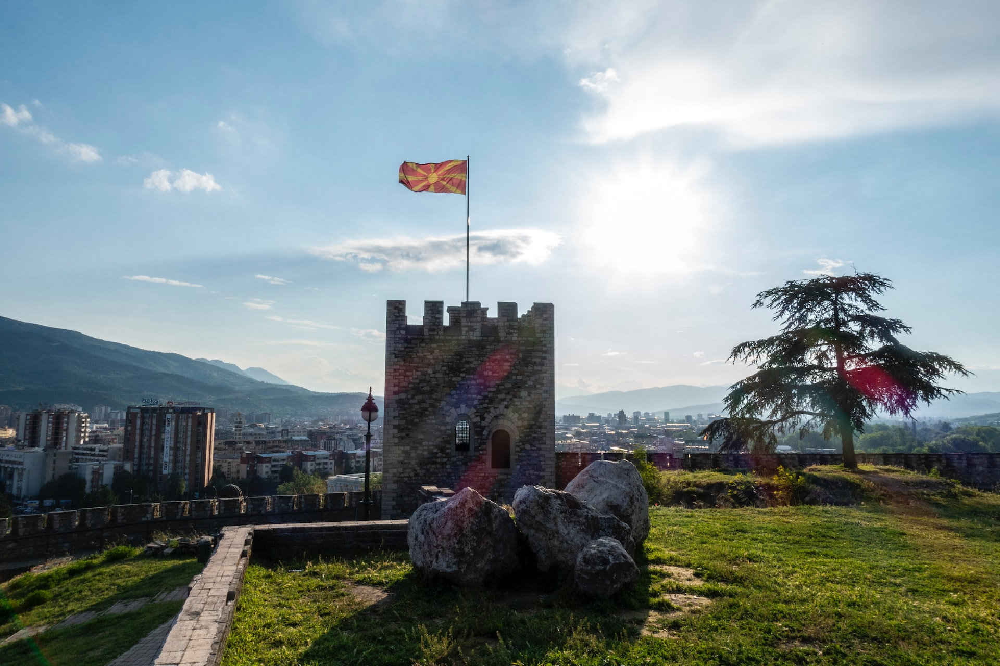
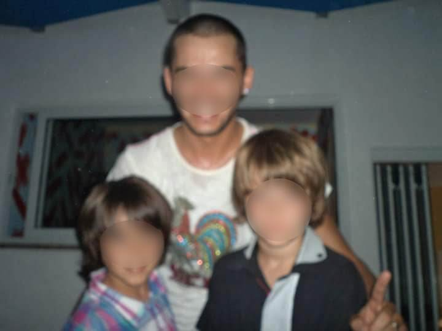
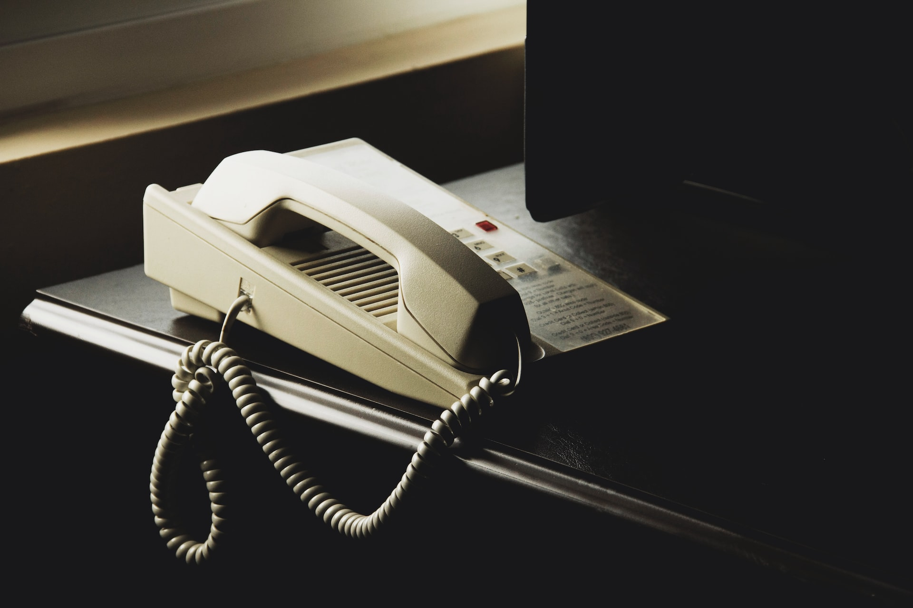
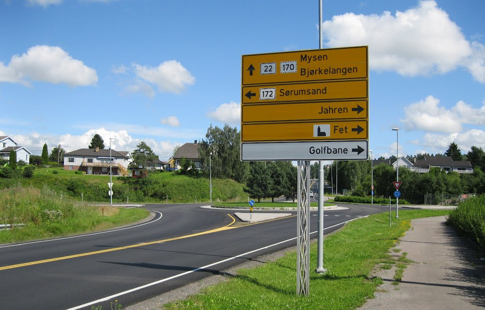
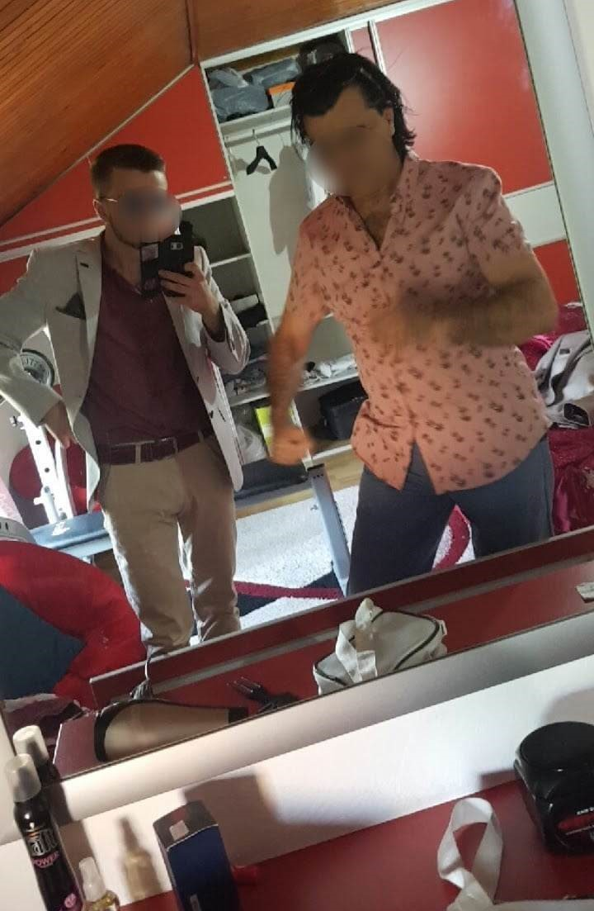

Navn i artikkel er fiktive, men historien er ekte.
Det har nå gått 13 måneder siden jeg sist har sett moren min
En dag før vi skal på kino så ringer henne meg og sier
"Mirsad du må finne passet ditt og broren din sin og legge den tilbake
på plass. Slik at dere vet hvor den kan finnes senere!" sier moren til
Mirsad over telefonen, før hun straks legger på.

Mirsad da han var ett år gammel. Bilde fra privat samling
Mirsad har kommet til Norge sammen med familien sin da han var bare
1 år gammel (1999), fra et land i Europa som var på den tiden preget
av krig (Makedonia). Hans familie flyktet til Norge da alt av strøm
og vann tilførsel stoppet opp og folk fryktet starten på krigen. Da
rømte rundt 30% av befolkningen ut av landet for å søke trygghet i
disse tidene.

-En av de første tingene jeg kan huske er en drøm. Jeg var ca. 3 år
gammel (2001). Jeg ser i taket, det er mørkt på rommet. Jeg er
usikker på om det var natt eller dag. Jeg ligger i barneseng og ser
i taket. Plutselig så dukker det opp en skygge i taket som så ut som
faren min og jeg husker godt til den dagen at den ber meg om å være
stille. Jeg skriker og skriker, jeg prøver så godt jeg kan å skremme
bort skyggen. Til slutt forsvinner den. Forteller Mirsad
-Faren min er en mann som bryr seg veldig om barna sine, han hadde
gjort alt for oss, nesten alt. Men dessverre har han lite forståelse
for det motsatte kjønnet.
-Jeg husker en gang da vi var i Bergen før vi ble kastet ut, at jeg
så foreldrene mine krangle skikkelig. Jeg ble kjemperedd. Jeg går
inn på rommet mitt og ser faren min gjemme seg bak døra mi. Han
forsøker å spille offer og forteller hvor slem moren min er. Men det
var han som slo moren min. Jeg spurte han rett ut "Hvorfor slår du
mamma?" og han nekter og sier at det var hun som slo han. Når jeg
selv husker at jeg så han gjøre dette. Sier Mirsad
-Ikke misforstå meg, jeg har mange gode minner fra faren min hvor vi
ser på Jurassic park sammen og samler Pokemon kort. Vi hadde det
kjempegøy sammen, men likevel hadde han den mørke siden av seg som
ga meg en klump i halsen når jeg merket at noe var på gang igjen.
Forteller Mirsad

-Jeg husker at i 2003 ble vi kastet ut av Norge. Grunnen til dette
var falske dokumentasjon som faren min har oppgitt til
UDI(Utlendingsdirektoratet). Forteller Mirsad.
Faren til Mirsad fortalte staten at de kom fra Kosovo for å få
opphold i Norge. Grunnen til det var at på den tiden var det krig i
Kosovo og det var en del flyktninger som ble sendt over til Norge.
Det var også krig i Makedonia på den tiden, men ikke like ille.
-Det var en av de verste opplevelsene i mitt liv, jeg var barn og
forsto veldig lite. Jeg så flere politi betjenter og en rekke
mennesker som jeg forsto senere i livet var fra UDI. Og opp i alt
dette driver faren min og krangler med politi betjent og sier "Jeg
går ikke noe sted herfra!", "jeg bestemmer her!". Som om det var han
som hadde noe kontroll her, men så sier politibetjenten at det er
han som bestemmer her og at han må roe seg ned nå. Forteller Mirsad
-Jeg husker ikke selve veien fra Norge tilbake til Makedonia, det
føltes som et knips at plutselig var vi her igjen. Det skjedde
øyeblikkelig. Forteller Mirsad

Mirsad sammen med familien sin blir kastet ut av Norge tidlig 2003.
Etter at de har flyttet tilbake til Makedonia så klikket det helt
for faren. Det førte til enda mer vold og mishandling hjemme. Både
fysisk og psykisk.
-Moren min var den som fikk kjent mest på det. Jeg husker at
foreldrene mine slåss og moren min nektet å gi seg, så faren min dro
opp kniven og startet å true henne med liv. Jeg som barn skjønte
ikke så mye, men jeg husker at jeg ville beskytte moren min. Så jeg
hoppe opp på faren min og ble uheldigvis stukket i hånda. Moren min
prøvde å kontakte bestefaren for å få hjelp, og da husker jeg at
faren min bare rev ledningen til telefonen ut. Forteller Mirsad
Etter det blir Mirsad kjørt til sykehuset og under hele kaoset
glemmer moren lommeboka si med hans helse opplysninger. Noe som
fulgte til at han ikke kunne få bedøvelse.
-Jeg måtte sy uten bedøvelse. Det var helt forjævlig, jeg skreik som
faen, og måtte bli holdt av 3 forskjellig leger. Det var den siste
dråpen som fikk moren min til å revurdere hele fremtiden til meg og
broren min. Hun ønsket ikke at vi skal vokse opp i sånne
omstendigheter og bestemte seg da på slutten av 2004 å lure faren
min. Forteller Mirsad

Moren forteller faren om at hun skal skaffe asyl for henne og barna
i Norge først og senere fikse det slik at han også kan bli med de
senere.
-Det var selvfølgelig en løgn slikt at han kan la oss dra. Jeg
husker ikke hvordan vi har kommet til Norge, men jeg tror at det var
som asylsøkere. Med en gang vi har ankommet Norge og har fått asyl.
Har moren min ordnet besøks-inn reisning forbud mot faren min, for å
beskytte oss fra han. Fra den tiden gikk ting bedre gradvis oppover,
vi måtte selvfølgelig leve i skjul fra faren min og holde hodet
lavt. Vi levde på noe som heter Kode 6, dette innebærer da at vi
levde på strengt fortrolig adresse. Forklarer Mirsad
"Å leve på kode 6 innebærer å leve på strengt fortrolig adresse. Det
betyr at dine personalia er hemmeligstemplet og at bare noen få
sikkerhetsklarerte personer kjenner identiteten og adressen din. Å
leve med en annen identitet og å leve i skjul, gjør at du er på
flukt i eget land. Ifølge Kripos lever over 700 mennesker i Norge på
hemmelig adresse. Rundt 300 av disse lever med et av politiets
sterkeste beskyttelsestiltak: Kode 6"
Etter det gikk livet til Mirsad og familien hans bedre, Han vokster
opp og får en del venner her i Norge.
-Selvfølgelig måtte vi flyttet litt rundt innimellom for å forbli
skjult. Med tiden som gikk ble jeg mer og mer integrert med det
Norske samfunnet. Fram til 2011 da hele livet mitt ble snudd opp
ned. Forteller Mirsad
En dag så overhørte Mirsad moren sin på telefonen. Det var faren
hans som ringte.
-Jeg har ikke hørt noe fra han på flere år nå. Samtalen handlet om
trusler fra faren min. Han truet henne med å drepe broren hennes som
bodde i Makedonia, hvis henne ikke sender barna til han for å besøke
han i 3 måneder. Han tok med seg 3 andre bøller og truet onkelen min
til å snakke med mamma og fikk henne til å sende oss til faren min
på ferie. Det var også på den tiden moren min har fått seg en ny
mann som viste seg at ham hjalp oss senere. Utdyper Mirsad

Juni 2011 tok Mirsad og broren hans Mikush fly alene for første gang
til Makedonia for å besøke faren sin.
-På flyplassen i Skopje ble vi møtt av pappa og fetteren min. Jeg
har ikke sett de på 6 år nå. Jeg trodde at fare var i vente, men det
viste seg at faren min lot det ikke gå utover oss. Han tok meg og
broren min til et koselig sted ved havet og vi spiste god mat der og
badet litt. Etter hvert dro vi hjem til han i Skopje og levde der
kommende uker. Det var ingenting spesielt som skjedde på den tiden.
Jeg følte meg som på ferie og var straks klar for å reise hjem. Sier
Mirsad
Når det har gått 3 måneder som avtalt, ringer Mirsad moren sin og
spør om at det ikke var på tide straks for at de skal reise hjem.
Svaret hun ga han var ikke noe han har forventet.
"Beklager, men dere for ikke kommet hjem helt enda, du må være
tålmodig gutten min." Sier moren til Mirsad på telefonen.
-Jeg forsto ikke situasjonen og ble overrasket av det. Jeg var bare
barn og det var vanskelig for meg å forstå hele situasjonen. Sier
Mirsad
-Jeg har også spurt faren min gjentattganger om når vi skal reise
tilbake til mamma, men da fikk jeg alltid det samme svaret. Sier
Mirsad
"Når moren din kommer og henter dere her, så for dere lov å reise
hjem". Svarer faren til Mirsad.
-Jeg vil tro at planen hans var nok å holde henne her også som en
straff for at vi dro fra han. Det endte opp med at jeg godkjente
"tapet", at det er her nå jeg skal bo framover. Jeg husker hver gang
jeg var i moskeen, så bedde jeg til gud om å se moren min straks
igjen. Jeg savnet henne skikkelig mye. Forteller Mirsad
På andre siden forteller Mirsad om at det var en av de beste årene
som barn for han.
-Jeg hadde ingen grenser, ingen stoppet meg fra noe, jeg hadde mer
frihet enn et vanlig barn. Der og da føltes det utrolig digg, men
når jeg tenker over dette nå så var det ingen bra ting å la barna
sine drive med hva de ønsker seg, spesielt på en alder av 12. Jeg
startet til å gå på skolen der, sjuende klasse. Jeg gikk der hele
året, fra starten til slutten av semesteret. Skolen i Skopje var
ganske tøft, men jeg ble tatt godt være på av andre
klassekameratene. Forteller Mirsad

Fra høyre. Bilde av Mirsad, en ukjent mann og lille broren hans da
de befant seg i Makedonia sammen med faren sin i 2011: Bilde fra
privat samling
Han husker en episode hvor før skole timen har startet gikk han og
andre barna og banket på dører til nabohuset ved skolen og løp unna.
Såkalt «ring og stikk»
-Jeg husker en episode da vi før timen gikk og banket på dører til
nabohus ved skolen, og løp unna. Senere i timen kommer rektor inn og
spør om hvem som har gjort det. Jeg har blitt lært i Norge om at
ærlighet varer lengst, men det var ikke slik her. Jeg var den eneste
som innrømte at jeg gjorde dette, og ble spurt om flere var med, men
jeg nektet. Heldigvis fikk jeg ingen straff da jeg var ny på skolen.
Etter dette fikk jeg mye sympati og lojalitet fra klassekameratene
mine. Så skole var ingen problem etter dette når det gjald venner.
Av et eller annet grunn så var jeg var flink med å fikse pennen til
folk. Da ble jeg kjent som han gutten som var til å fikse penner så
barna der pleide faktisk å kalle meg "pennmaker". Forteller Mirsad
imens han smiler litt

Det har nå gått 13 måneder siden Mirsad og broren hans sist så moren
sin.
-Vi skulle på kino en dag sammen med faren min, broren min og
fetterne min. Før kino samme kveld ringer plutselig moren og sier
«Mirsad du må finne passet ditt og broren din sitt og legge den
tilbake på plass. Slik at dere vet hvor den kan finnes senere!» Jeg
skjønte lite av det da, men jeg gjorde som ho ba meg om. forteller
Mirsad
På den tiden så pleide Mirsad og broren å være delvis hos faren sin,
men også hos Mormor, som også bodde i Skopje.
-Jeg husker at jeg har fått beskjed fra moren min om å pakke alt av
klær og nødvendigheter. Men det jeg faktisk pakket var Playstation
3, masse spill og 2 par bokser. Etter dette fikk jeg beskjed om å
lure både faren min og mormoren min til å tro på at jeg er hos den
motsatte personen. Så pappa trodde jeg var hos mormor og mormor
trodde jeg var hos pappa. På den måten var vi i midten mellom de to
og da kunne vi vente på moren min og stefaren min som skulle komme
og hente oss. Forteller Mirsad
-Jeg og broren min var så spent på at vi dro hele 3 timer tidligere
og ventet på dem. Vi savnet henne så mye, og kunne ikke vente
lenger. Vi ventet på skolen min. Vi klatret på treet og holdte sikt
i tilfelle pappa skulle komme. Like etter har vi fått beskjed fra
moren om at nå er det på tide å komme til avtalt sted. Vi gikk fra
skolen til sted hvor dem skulle komme. Vi sto og venta, plutselig
kjører det en bil forbi og stopper ved siden av oss. Det er moren
min, sammen med stefaren min. Hun ba oss om å hoppe inn i bilen
fort, og legge hodet lavt. Jeg husker det godt, siden det første jeg
ønsket var å klemme henne med en gang, men jeg måtte vente med det
fram til vi krysset den Makedonske grensen. I det vi krysset grensa
kunne jeg endelig puste dypt ut. Da visste jeg at vi var trygge hos
moren min igjen. Forteller Mirsad

Etter dette drar Mirsad og familien til Mostar i Bosnia. Det er byen
hvor stefaren hans var fra. De var trygge der og oppholde seg der i
noe dager før de kjørte bilen til Norge.
-Da ankom jeg for første gang Mysen. Byen jeg bor i til den dagen
idag. Jeg var tilbake i Norge august 2012, og startet å gå på
Eidsberg ungdomsskole. Etter dette, startet jeg opp et vanlig liv i
Norge igjen. Selvfølgelig måtte jeg fremdeles leve i skjul, fram til
jeg ble 18 år gammel. Jeg hadde ingen kontakt med faren min fram til
2017. Forteller Mirsad
Først i 2017 når Mirsad er 19 år gammel, så bestemmer han seg for å
ta opp kontakt med faren, og ordne opp i saker. Han ber derfor
bestefaren sin om telefon nummeret til faren hans.
-Først i 2017 fikk jeg et nummer fra bestefaren min, etter at jeg
har sagt til han at jeg ønsker å ta opp kontakten med faren min og
ordne opp i saker. Vi bygde opp kontakt gradvis, litt og litt. Det
var ingen snakk om fortiden. Fram til jeg endelig bestemte meg for å
dra ned og besøke han etter at jeg har blitt voksen. Forteller
Mirsad
Etter uker med kontakt bestemmer Mirsad seg for å reise ned til
Makedonia og besøke faren.
-Jeg reiser ned og møter på han, han virker kjempeglad for å se meg
igjen og vi har det bra den dagen. Første gang på kvelden setter jeg
meg ned med han og sier "Pappa vi glemmer det som har skjedd, hvis
du ønsker å ha kontakt med meg Og Mikush (Broren min), så glemmer du
Mamma og fokuserer kun på barna dine." Faren min startet å gråte, og
ble med på dette. Etter det har vi bygget et bedre forhold nå og
glemt det som har skjedd i fortiden. Han er tross alt den eneste
faren jeg kommer til å ha. Jeg er en person som liker ikke
konflikter, og ifølge religionen min skal vi tilgi folk for demmes
synder, ingen mennesker er feilfritt. Derfor valgte jeg å gi faren
min en sjanse til. Forklarer Mirsad

Bilde av Mirsad (Venstre) sammen med faren sin (Høyre) i 2019
etter at de har ordnet opp i problemene. Bilde fra privat samling
-Jeg har nå sammen med faren gjort en avtale hvor vi skal besøke
hverandre minst en gang i året. Samtidig som jeg har nå selv fått
barn, har familie opplevelse gitt meg større perspektiv på hva det
er å si å være foreldre. Forteller Mirsad
-Det hender at jeg innimellom tenker på ting som har skjedd før, men
jeg lar det ikke påvirke måten jeg vil oppdrar barnet mitt. Jeg
kommer aldri til å la barnet mitt oppleve det samme. Forteller
Mirsad til slutt.